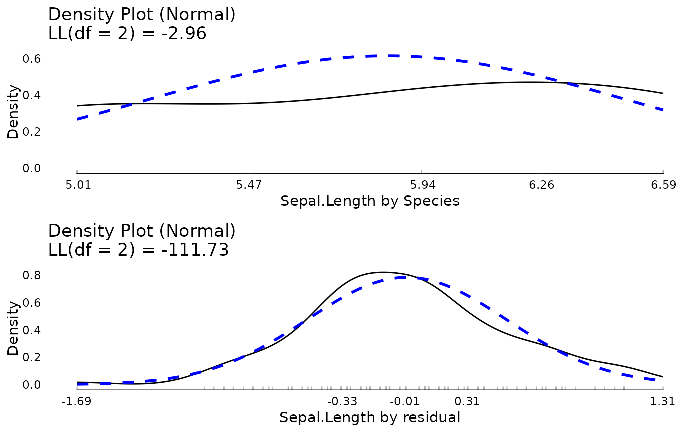

This function decomposes a variable in a long data set by grouping factors, such as by ID. If multiple grouping factors are listed, the decomposition is in order from left to right. Residuals from the lowest level are returned.
Examples
meanDecompose(mpg ~ vs, data = mtcars)
#> $`mpg by vs`
#> vs X
#> <num> <num>
#> 1: 0 16.61667
#> 2: 1 24.55714
#>
#> $`mpg by residual`
#> X
#> <num>
#> 1: 4.3833333
#> 2: 4.3833333
#> 3: -1.7571429
#> 4: -3.1571429
#> 5: 2.0833333
#> 6: -6.4571429
#> 7: -2.3166667
#> 8: -0.1571429
#> 9: -1.7571429
#> 10: -5.3571429
#> 11: -6.7571429
#> 12: -0.2166667
#> 13: 0.6833333
#> 14: -1.4166667
#> 15: -6.2166667
#> 16: -6.2166667
#> 17: -1.9166667
#> 18: 7.8428571
#> 19: 5.8428571
#> 20: 9.3428571
#> 21: -3.0571429
#> 22: -1.1166667
#> 23: -1.4166667
#> 24: -3.3166667
#> 25: 2.5833333
#> 26: 2.7428571
#> 27: 9.3833333
#> 28: 5.8428571
#> 29: -0.8166667
#> 30: 3.0833333
#> 31: -1.6166667
#> 32: -3.1571429
#> X
#>
meanDecompose(mpg ~ vs + cyl, data = mtcars)
#> $`mpg by vs`
#> vs X
#> <num> <num>
#> 1: 0 16.61667
#> 2: 1 24.55714
#>
#> $`mpg by vs & cyl`
#> vs cyl X
#> <num> <num> <num>
#> 1: 0 6 3.950000
#> 2: 1 4 2.172857
#> 3: 1 6 -5.432143
#> 4: 0 8 -1.516667
#> 5: 0 4 9.383333
#>
#> $`mpg by residual`
#> X
#> <num>
#> 1: 0.4333333
#> 2: 0.4333333
#> 3: -3.9300000
#> 4: 2.2750000
#> 5: 3.6000000
#> 6: -1.0250000
#> 7: -0.8000000
#> 8: -2.3300000
#> 9: -3.9300000
#> 10: 0.0750000
#> 11: -1.3250000
#> 12: 1.3000000
#> 13: 2.2000000
#> 14: 0.1000000
#> 15: -4.7000000
#> 16: -4.7000000
#> 17: -0.4000000
#> 18: 5.6700000
#> 19: 3.6700000
#> 20: 7.1700000
#> 21: -5.2300000
#> 22: 0.4000000
#> 23: 0.1000000
#> 24: -1.8000000
#> 25: 4.1000000
#> 26: 0.5700000
#> 27: 0.0000000
#> 28: 3.6700000
#> 29: 0.7000000
#> 30: -0.8666667
#> 31: -0.1000000
#> 32: -5.3300000
#> X
#>
## Example plotting the results
tmp <- meanDecompose(Sepal.Length ~ Species, data = iris)
do.call(ggpubr::ggarrange, c(lapply(names(tmp), function(x) {
plot(JWileymisc::testDistribution(tmp[[x]]$X), plot = FALSE, varlab = x)$Density
}), ncol = 1))

rm(tmp)